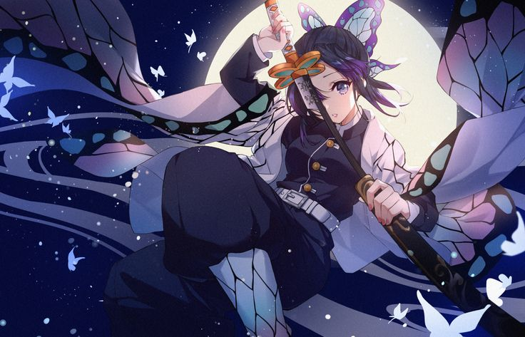
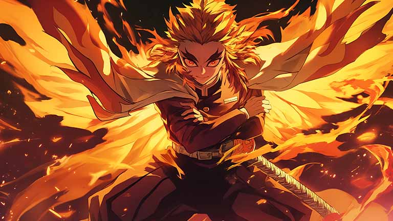
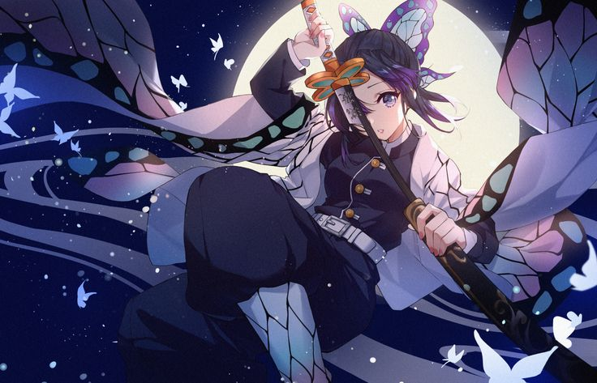
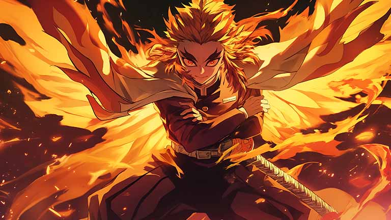
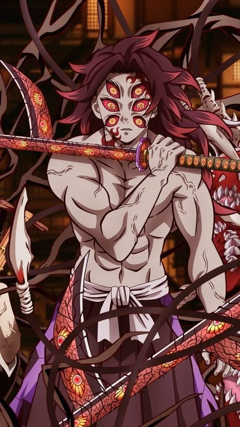
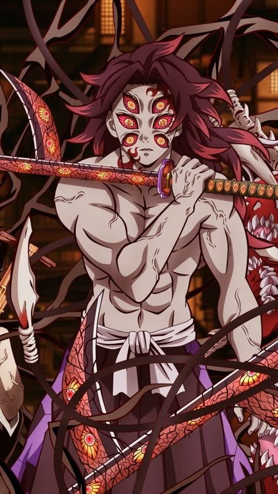
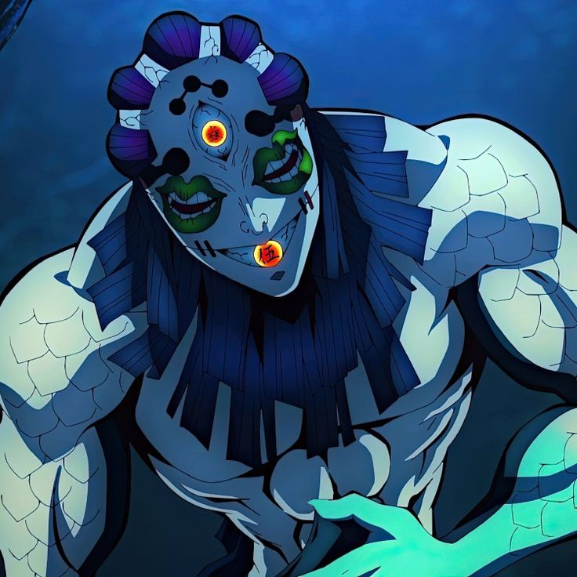
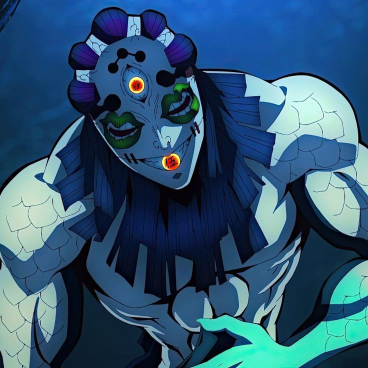

Demon Slayer: Kimetsu no Yaiba (Japanese: 鬼滅の刃, Hepburn: Kimetsu no Yaiba; rgh. 'Blade of Demon Destruction'[4]) is a Japanese manga series written and illustrated by Koyoharu Gotouge. It was serialized in Shueisha's shōnen manga magazine Weekly Shōnen Jump from February 2016 to May 2020, with its chapters collected in 23 tankōbon volumes. It has been published in English by Viz Media and simultaneously on the Manga Plus platform by Shueisha. It follows teenage Tanjiro Kamado, who joins the Demon Slayer Corps after his family is slaughtered and the sole survivor, his younger sister Nezuko, is turned into a demon, in the hopes of turning her human again. An anime television series adaptation, produced by Ufotable, aired a 26-episode first season from April to September 2019, with a sequel film, Demon Slayer: Kimetsu no Yaiba – The Movie: Mugen Train, released in October 2020, which became the highest-grossing anime and Japanese film of all time. An 18-episode second season of the anime series aired from October 2021 to February 2022 while a feature-length compilation, Demon Slayer: Kimetsu no Yaiba – To the Swordsmith Village, was released in theaters in February 2023. An 11-episode third season aired from April to June 2023 while another compilation, Demon Slayer: Kimetsu no Yaiba – To the Hashira Training, was released in theaters in February 2024. An eight-episode fourth season aired from May to June 2024. A film trilogy sequel adapting the "Infinity Castle" story arc premiered in theaters in July 2025. By July 2025, the manga had over 220 million copies in circulation, including digital versions, making it one of the best-selling manga series of all time; it was the best-selling manga of 2019 and 2020. It has received critical acclaim for its art, storyline, action scenes and characters. The Demon Slayer: Kimetsu no Yaiba franchise is one of the highest-grossing media franchises of all time. Synopsis Setting In Taishō era Japan, a secret organization known as the "Demon Slayer Corps" has waged a war against demons for centuries. Demons are former humans who possess supernatural abilities such as enhanced strength, rapid regeneration, and unique powers referred to as "Blood Demon Arts". Demons can only be killed if they are exposed to direct sunlight, decapitated with weapons crafted from an alloy called Nichirin, or injected with a poison extracted from wisteria flowers. In contrast, the Demon Slayers are entirely human but employ specialized elemental breathing techniques known as "Breathing Styles". These techniques grant them superhuman strength, heightened abilities, and increased resilience that enable them to fight demons effectively. The most formidable Demon Slayers are known as the "Hashira" and gain this title through multiple advancements in the Corps' ranks, culminating in killing fifty demons at the highest level or a member of the Twelve Kizuki. Plot Main article: List of Demon Slayer: Kimetsu no Yaiba characters Tanjiro Kamado is a kind-hearted and diligent boy who lives with his family in the mountains. After the death of his father, he becomes the sole provider for his household, selling charcoal in nearby villages. He returns home one day to discover his family has been slaughtered by a demon. His younger sister, Nezuko, is the only survivor, though she has been transformed into a demon herself. She exhibits the unusual trait of retaining some human emotion and cognition. The pair are discovered by Giyu Tomioka, the Water Hashira of the Demon Slayer Corps, who sends Tanjiro to be trained by his own former mentor, Sakonji Urokodaki. Tanjiro vows to become a Demon Slayer to avenge his family and find a way to return Nezuko to humanity. After mastering the "Water Breathing" swordsmanship style, Tanjiro passes the Corps' final selection. Nezuko, who has been placed under a hypnotic suggestion by Urokodaki to suppress her demonic urges, accompanies him. During a mission in Asakusa, they encounter Muzan Kibutsuji, the progenitor of all demons and the one responsible for the murder of their family. They also befriend Tamayo and her assistant Yushiro, two demons who have freed themselves from Muzan's control. Tamayo agrees to develop a cure for Nezuko, a process that requires blood from the powerful Twelve Kizuki, Muzan's most elite subordinates. Tanjiro and Nezuko are joined in their mission by fellow Demon Slayers Zenitsu Agatsuma and Inosuke Hashibira. Together, they defeat several members of the Twelve Kizuki. During a fierce battle, Tanjiro awakens a mysterious and powerful swordsmanship technique known as "Hinokami Kagura". Their actions draw the attention of the Hashira, the Corps' highest-ranking swordsmen, and they are brought before the organization's leader, Kagaya Ubuyashiki. He sanctions their continued partnership, believing the siblings are pivotal to defeating Muzan. Muzan, enraged by the failures of his remaining Lower Ranks, executes all of them except for Lower One, who he sends to kill Tanjiro. After a battle aboard a moving train, Tanjiro prevails with the aid of the Flame Hashira, Kyojuro Rengoku, who is subsequently killed by the Upper Three demon, Akaza. The group continues their campaign, assisting the Sound Hashira in defeating the Upper Six siblings and later helping the Mist and Love Hashira eliminate Upper Five and Upper Four at the Swordsmith Village. During these events, Nezuko develops an immunity to sunlight, making her the key to Muzan's goal of overcoming his own fatal weakness. Tanjiro also learns that his Hinokami Kagura is derived from "Sun Breathing," the original swordsmanship style created by Breathing progenitor Yoriichi Tsugikuni. The Demon Slayer Corps prepares for a final confrontation as Tamayo works on a serum. Muzan launches a preemptive assault, prompting Kagaya to sacrifice himself in a suicide attack. The Hashira engage Muzan, but he traps them within the Infinity Castle, where they must battle the remaining Upper Ranks. Through great sacrifice, the demons Akaza, Doma, and Kokushibo are defeated. Muzan kills Tamayo but is severely weakened by the poison she implanted in him. Forced above ground, a desperate battle ensues as the remaining Demon Slayers fight to hold him until sunrise. Though most of the Hashira perish, Tanjiro delivers the final blow. With his last breath, Muzan transforms Tanjiro into a demon, but Nezuko, now fully human, helps reverse the transformation. In the aftermath of Muzan's defeat, all demons under his control perish. The Demon Slayer Corps is disbanded, with only two of the active Hashira surviving. Tanjiro and Nezuko return to their mountain home, their journey finally complete. In the ensuing years, Tanjiro marries Kanao Tsuyuri, Inosuke weds Aoi Kanzaki, and Zenitsu marries Nezuko. In a modern-day epilogue, their descendants and reincarnations live in a world free from demons.

 




 



 
